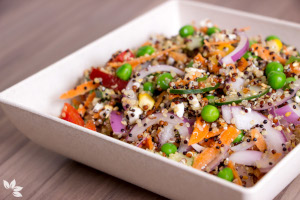
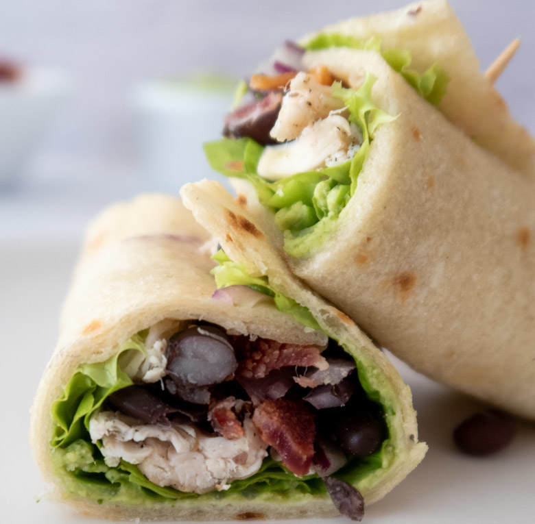

Salada de Quinoa
Ingredientes:
- 1 xícara de quinoa cozida
- 1 pepino médio cortado em cubos
- 1 tomate picado
- 1/2 pimentão vermelho cortado em tiras
- 1/4 de cebola roxa fatiada
- Folhas de rúcula a gosto
- Salsinha e hortelã picadas a gosto
- Sal e azeite a gosto
Modo de preparo:
Em uma tigela, misture a quinoa cozida com os legumes e as ervas. Tempere com sal e azeite a gosto. Sirva fria e aproveite essa deliciosa e saudável salada de quinoa.
Omelete de Legumes
Ingredientes:
- 3 ovos
- 1/4 de xícara de brócolis picado
- 1/4 de xícara de abobrinha picada
- 1/4 de xícara de cenoura ralada
- 1/4 de xícara de pimentão vermelho picado
- 1/4 de xícara de cebola picada
- Sal e pimenta a gosto
- 1 colher de chá de azeite
Modo de preparo:
Em uma tigela, bata os ovos com sal e pimenta. Em uma frigideira antiaderente, aqueça o azeite e refogue os legumes por alguns minutos. Despeje os ovos batidos sobre os legumes e cozinhe em fogo baixo até firmar. Dobre ao meio e sirva quente. Essa omelete de legumes é uma opção rápida e saudável para uma refeição leve.
Wrap de Frango com Folhas Verdes
Ingredientes:
- 1 peito de frango grelhado e desfiado
- Folhas verdes (alface, rúcula, agrião)
- Tomate em rodelas
- Pepino em tiras
- Cenoura ralada
- Iogurte natural
- Mostarda
- Wrap de trigo integral
Modo de preparo:
Misture o frango desfiado com iogurte natural e mostarda para fazer o recheio. Aqueça o wrap de trigo integral e coloque as folhas verdes, o tomate, o pepino e a cenoura ralada. Adicione o recheio de frango e feche o wrap. Sirva em seguida ou embrulhe em papel manteiga para levar como lanche. Esse wrap de frango é uma opção saudável e saborosa para refeições rápidas.